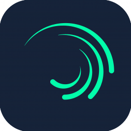

Nama saya Fari Hafizh Nugroho, dan saya mahasiswa jurusan Ilmu Komputer di IPB University. Saya
memiliki minat dan hobi yang kuat dalam dunia desain.
Selama masa studi saya, saya telah berpartisipasi dalam berbagai proyek yang melibatkan pembuatan
desain untuk aplikasi, website, dan proyek grafis lainnya.
Pengalaman ini tidak hanya memperkuat keterampilan teknis saya, tetapi juga mengajarkan saya
pentingnya komunikasi visual yang efektif dan bagaimana desain dapat mempengaruhi pengalaman
pengguna.
Projects
IT Today 2023
IT Today merupakan acara tahunan yang diselenggarakan oleh Himpunan Mahasiswa Ilmu
Komputer (Himalkom) IPB dan merupakan rangkaian kegiatan IT terbesar di IPB sejak tahun
2003.
Agriinformatics 2024
Agri-informatics merupakan rangkaian acara pengenalan komunitas-komunitas yang ada di
departemen ilmu komputer. Komunitas-komunitas yang ada merupakan wadah yang disediakan
untuk menjadi sarana pengembangan diri sesuai dengan minat kalian masing-masing!
Pekan Ilkomerz 2024
Pekan Ilkomerz adalah sebuah acara tahunan yang dirancang khusus untuk memperkenalkan
Departemen Ilmu Komputer kepada mahasiswa baru. Acara ini berlangsung setiap tahun dan
bertujuan untuk memberikan wawasan mendalam kepada mahasiswa tingkat awal tentang
program studi, fasilitas, dan berbagai kegiatan yang ditawarkan oleh departemen.
Software
Berikut beberapa software yang saya pakai untuk editing ataupun mendesain.
Figma
Adobe Photoshop
Adobe After Effect

Alight Motion
Contact
Kalau mau ngobrol-ngobrol bisa hubungi melalui media dibawah :